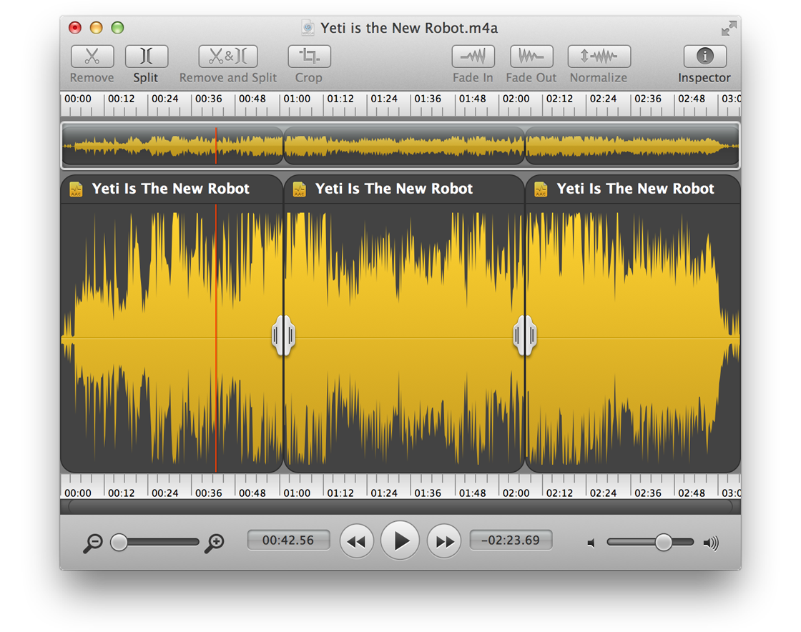

Fission: Fast & Lossless Audio Editing

Fission is an audio editor designed with simplicity in mind. Using Fission, you can quickly and easily trim and split MP3, AAC, Apple Lossless, FLAC, AIFF, and WAV files, with no quality loss. Split one large audio file into multiple files. Remove sections of audio from a file. Fade audio in and out. Fission will help you accomplish your editing needs with ease.
You can also use Fission to export audio from one format to another (save AIFF files as MP3, or Apple Lossless as AAC), to batch convert a group of files between formats, and even to create iPhone ringtones.
Editing audio has never been this simple or this inexpensive. Fission makes simple audio editing fast and affordable!
Getting Started
We recommend having a quick read-through of this manual, but you can also just dive in if you like. You can refer back to the full manual for assistance at any time by accessing it from the Help menu.
New and Updated In Fission 2.2.1
An incompatibility with ALAC files generated by non-Apple applications like doubleTwist's "AirPlay Recorder" has been addressed.
Fission's Start Window is now prevented from showing if Fission was launched by opening a file.
Several other minor fixes and improvements have been made.
New and Updated In Fission 2.2
Fission can now import many more formats, including MPEG layer 1 and 2, AIFF-C, Ogg Vorbis, Shorten, RealAudio, Windows Media Audio (WMA), AMR, QDesign Music, WavePack and Monkey’s Audio. Newly accepted file extensions: inclue .mpa, .mp1, .mp2, .ogg, .wv, .ape, and .shn.
Several crashes with the Batch Converter, introduced with backend changes made in Fission 2.1.4, are gone with version 2.2. Thanks, Woz!
Several other minor fixes and improvements have been made.
System Requirements
A Macintosh computer
Mac OS X 10.7 or higher
Installation and Removal
To install Fission, just drag it from your download folder to the Applications folder.
If you wish to remove Fission, simply drag it to the Trash.
Purchasing Fission
We provide a free trial of Fission for you to test. During the trial, the quality of audio saved with Fission is intentionally degraded with a series of audio fades. The full version of Fission can be unlocked with a license key from our online store.
When you're ready, head over to http://rogueamoeba.com/store/ to purchase Fission.
For more information, see the Purchasing page.